- Определения и примеры
- Приведение одночлена к стандартному виду
- Сложение и вычитание одночленов
- Умножение одночленов
- Деление одночленов
- Возведение одночлена в степень
- Разложение одночлена на множители
- Задания для самостоятельного решения
Определения и примеры
Одночлен — это произведение чисел, переменных и степеней. Например, выражения 5a, 3ab2 и −62aa2b3 являются одночленами.
Приведём ещё примеры одночленов:
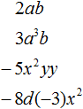
Одночленом также является любое отдельное число, любая переменная или любая степень. Например, число 9 является одночленом, переменная x является одночленом, степень 52 является одночленом.
Приведение одночлена к стандартному виду
Рассмотрим следующий одночлен:
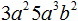
Этот одночлен выглядит не очень аккуратно. Чтобы сделать его проще, нужно привести его к так называемому стандартному виду.
Приведение одночлена к стандартному виду заключается в перемножении однотипных сомножителей, входящих в этот одночлен. То есть числа нужно перемножать с числами, переменные с переменными, степени со степенями. В результате этих действий получается упрощённый одночлен, который тождественно равен предыдущему.
Ещё один нюанс заключается в том, что в одночлене степени можно перемножать только в том случае, если они имеют одинаковые основания.
Итак, приведём одночлен 3a25a3b2 к стандартному виду. В этом одночлене содержатся числа 3 и 5. Перемножим их, получим число 15. Записываем его:
15
Далее в одночлене 3a25a3b2 содержатся степени a2 и a3, которые имеют одинаковое основание a. Из тождественных преобразований со степенями известно, что при перемножении степеней с одинаковыми основаниями, основание оставляют без изменений, а показатели складывают. Тогда перемножение степеней a2 и a3 даст в результате a5. Записываем a5 рядом с числом 15
15a5
Далее в одночлене 3a25a3b2 содержится степень b2. Её не с чем перемножать, поэтому она остаётся без изменений. Записываем её как есть к новому одночлену:
15a5b2
Мы привели одночлен 3a25a3b2 к стандартному виду. В результате получили одночлен 15a5b2
3a25a3b2 = 15a5b2
Числовой сомножитель 15 называют коэффициентом одночлена. Приводя одночлен к стандартному виду, коэффициент нужно записывать в первую очередь, и только потом переменные и степени.
Если коэффициент в одночлене отсутствует, то говорят, что коэффициент равен единице. Так, коэффициентом одночлена abc является 1, поскольку abc это произведение единицы и abc
abc = 1 × abc
А коэффициентом одночлена −abc будет −1, поскольку −abc это произведение минус единицы и abc
−abc = −1 × abc
Степенью одночлена называют сумму показателей всех переменных входящих в этот одночлен.
Например, степенью одночлена 15a5b2 является 7. Это потому что переменная a имеет показатель 5, а переменная b имеет показатель 2. Отсюда 5 + 2 = 7. Показатель числового сомножителя 15 считать не нужно, поскольку нас интересуют только показатели переменных.
Ещё пример. Степенью одночлена 7ab2 является 3. Здесь переменная a имеет показатель 1, а переменная b имеет показатель 2. Отсюда 1 + 2 = 3.
Если одночлен не содержит переменных или степеней, а состоит из числа, то говорят, что степень такого одночлена равна нулю. Например, степень одночлена 11 равна нулю.
Не следует путать степень одночлена и степень числа. Степень числа это произведение из нескольких одинаковых множителей, тогда как степень одночлена это сумма показателей всех переменных входящих в этот одночлен. В одночлене 11 нет переменных, поэтому его степень равна нулю.
Пример 1. Привести одночлен 5xx3ya2 к стандартному виду
Перемножим числа 5 и 3, получим 15. Это будет коэффициент одночлена:
15
Далее в одночлене 5xx3ya2 содержатся переменные x и x. Перемножим их, получим x2.
15x2
Далее в одночлене 5xx3ya2 содержится переменная y, которую не с чем перемножать. Записываем её без изменений:
15x2y
Далее в одночлене 5xx3ya2 содержится степень a2, которую тоже не с чем перемножать. Её также оставляем без изменений:
15x2ya2
Получили одночлен 15x2ya2, который приведён к стандартному виду. Буквенные сомножители принято записывать в алфавитном порядке. Тогда одночлен 15x2ya2 примет вид 15a2x2y.
Поэтому, 5xx3ya2 = 15a2x2y.
Пример 2. Привести одночлен 2m3n × 0,4mn к стандартному виду
Перемножим числа, переменные и степени по отдельности.
2m3n × 0,4mn = 2 × 0,4 × m3 × m × n × n = 0,8m4n2
Числа, переменные и степени при перемножении разрешается заключать в скобки. Делается это для удобства. Так, в данном примере перемножение чисел 2 и 0,4 можно заключить в скобки. Также в скобки можно заключить перемножение m3 × m и n × n
2m3n × 0,4mn = (2 × 0,4) × (m3 × m) × (n × n) = 0,8m4n2
Но желательно выполнять все элементарные действия в уме. Так, решение можно записать значительно короче:
2m3n × 0,4mn = 0,8m4n2
Но чтобы в уме приводить одночлен к стандартному виду, тема умножения целых чисел и умножения степеней должна быть изучена на хорошем уровне.
Сложение и вычитание одночленов
Одночлены можно складывать и вычитать. Чтобы это было возможно, они должны иметь одинаковую буквенную часть. Коэффициенты могут быть любыми. Сложение и вычитание одночленов это по сути приведение подобных слагаемых, которое мы рассматривали при изучении буквенных выражений.
Чтобы сложить (вычесть) одночлены, нужно сложить (вычесть) их коэффициенты, а буквенную часть оставить без изменений.
Пример 1. Сложить одночлены 6a2b и 2a2b
6a2b + 2a2b
Сложим коэффициенты 6 и 2, а буквенную часть 6a2b оставим без изменений
6a2b + 2a2b = 8a2b
Пример 2. Вычесть из одночлена 5a2b3 одночлен 2a2b3
5a2b3 − 2a2b3
Можно заменить вычитание сложением, и сложить коэффициенты одночленов, оставив буквенную часть без изменения:
5a2b3 − 2a2b3 = 5a2b3 + (−2a2b3) = 3a2b3
Либо сразу из коэффициента первого одночлена вычесть коэффициент второго одночлена, а буквенную часть оставить без изменения:
5a2b3 − 2a2b3 = 3a2b3
Умножение одночленов
Одночлены можно перемножать. Чтобы перемножить одночлены, нужно перемножить их числовые и буквенные части.
Пример 1. Перемножить одночлены 5x и 8y
Перемножим числовые и буквенные части по отдельности. Для удобства перемножаемые сомножители будем заключать в скобки:
\[5x \times 8y = (5 \times 8) \times (x \times y) = 40xy\]
Пример 2. Перемножить одночлены 5x2y3 и 7x3y2c
Перемножим числовые и буквенные части по отдельности. В процессе умножения будем применять правило перемножения степеней с одинаковыми основаниями. Перемножаемые сомножители будем заключать в скобки:
5x2y3 × 7x3y2c = (5 × 7) × (x2x3) × (y3y2) × c = 35x5y5c
Пример 3. Перемножить одночлены −5a2bc и 2a2b4
−5a2bc × 2a2b4 = (−5 × 2) × (a2a2) × (bb4) × c = −10a4b5c
Пример 4. Перемножить одночлены x2y5 и (−6xy2)
x2y5 × (−6xy2) = −6 × (x2x) × (y5y2) = −6x3y7
Пример 5. Найти значение выражения
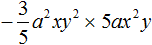
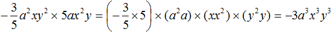
Деление одночленов
Одночлен можно разделить на другой одночлен. Для этого нужно коэффициент первого одночлена разделить на коэффициент второго одночлена, а буквенную часть первого одночлена разделить на буквенную часть второго одночлена. При этом используется правило деления степеней.
Например, разделим одночлен 8a2b2 на одночлен 4ab. Запишем это деление в виде дроби:
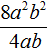
Первый одночлен 8a2b2 будем называть делимым, а второй 4ab — делителем. А одночлен, который получится в результате, назовём частным.
Разделим коэффициент делимого на коэффициент делителя, получим 8 : 4 = 2. В исходном выражении ставим знак равенства и записываем этот коэффициент частного:
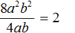
Теперь делим буквенную часть. В делимом содержится a2, в делителе — просто a. Делим a2 на a, получаем a, поскольку a2 : a = a2 − 1 = a. Записываем в частном a после 2
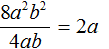
Далее в делимом содержится b2, в делителе — просто b. Делим b2 на b, получаем b, поскольку b2 : b = b2 − 1 = b. Записываем в частном b после a
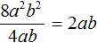
Значит, при делении одночлена 8a2b2 на одночлен 4ab получается одночлен 2ab.
Сразу можно выполнить проверку. При умножении частного на делитель должно получаться делимое. В нашем случае, если 2ab умножить на 4ab, должно получиться 8a2b2
2ab × 4ab = (2 × 4) × (aa) × (bb) = 8a2b2
Не всегда можно первый одночлен разделить на второй одночлен. Например, если в делителе окажется переменная, которой нет в делимом, то говорят, что деление невозможно.
К примеру, одночлен 6xy2 нельзя разделить на одночлен 3xyz. В делителе 3xyz содержится переменная z, которая не содержится в делимом 6xy2.
Проще говоря, мы не сможем найти частное, которое при умножении на делитель 3xyz дало бы делимое 6xy2, поскольку такое умножение обязательно будет содержать переменную z, которой нет в 6xy2.
Но если в делимом содержится переменная, которая не содержится в делителе, то деление будет возможным. В этом случае переменная, которая отсутствовала в делителе, будет перенесена в частное без изменений.
Например, при делении одночлена 4x2y2z на 2xy, получается 2xyz. Сначала разделили 4 на 2 получили 2, затем x2 разделили на x, получили x, затем y2 разделили на y, получили y. Затем приступили к делению переменной z на такую же переменную в делителе, но обнаружили, что такой переменной в делителе нет. Поэтому перенесли переменную z в частное без изменений:
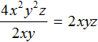
Для проверки умножим частное 2xyz на делитель 2xy. В результате должен получиться одночлен 4x2y2z
2xyz × 2xy = (2 × 2) × (xx) × (yy) × z = 4x2y2z
Но в некоторых дробях, если невозможно выполнить деление, бывает возможным выполнить сокращение. Делается это с целью упростить выражение.
Так, в предыдущем примере нельзя было разделить одночлен 6xy2 на одночлен 3xyz. Но можно сократить эту дробь на одночлен 3xy. Напомним, что сокращение дроби это деление числителя и знаменателя на одно и то же число (в нашем случае на одночлен 3xy). В результате сокращения дробь становится проще, но её значение не меняется:
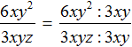
В числителе и знаменателе мы пришли к делению одночленов, которое можно выполнить:
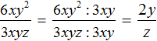
Процесс деления обычно выполняется в уме, записывая над числителем и знаменателем получившийся результат:
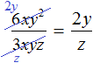
Пример 2. Разделить одночлен 12a2b3c3 на одночлен 4a2bc
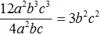
Пример 3. Разделить одночлен x2y3z на одночлен xy2
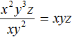
Дополнительно упомянем, что деление одночлена на одночлен также невозможно, если одна из степеней, входящая в делимое, имеет показатель меньший, чем показатель той же степени из делителя.
Например, разделить одночлен 2x на одночлен x2 нельзя, поскольку степень x, входящая в делимое, имеет показатель 1, тогда как степень x2, входящая в делитель, имеет показатель 2. Мы не сможем найти частное, которое при перемножении с делителем x2 даст в результате делимое 2x.
Конечно, мы можем выполнить деление x на x2, воспользовавшись свойством степени с целым показателем:
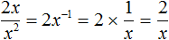
и такое частное при перемножении с делителем x2 будет давать в результате делимое 2x
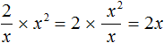
Но нас пока интересуют только те частные, которые являются так называемыми целыми выражениями. Целые выражения это те выражения, которые не являются дробями, в знаменателе которых содержится буквенное выражение. А частное
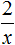
целым выражением не является. Это дробное выражение, в знаменателе которого содержится буквенное выражение.Возведение одночлена в степень
Одночлен можно возвести в степень. Для этого используют правило возведения степени в степень.
Пример 1. Возвести одночлен xy во вторую степень.
Чтобы возвести одночлен xy во вторую степень, нужно возвести во вторую степень каждый сомножитель этого одночлена
(xy)2 = x2y2
Пример 2. Возвести одночлен −5a3b во вторую степень.
(−5a3b)2 = (−5)2 × (a3)2 × b2 = 25a6b2
Пример 3. Возвести одночлен −a2bc3 в пятую степень.
В данном примере коэффициентом одночлена является −1. Этот коэффициент тоже нужно возвести в пятую степень:
(−a2bc3)5 = (−1)5 × (a2)5 × b5 × (c3)5 = −1a10b5c15 = −a10b5c15
Когда коэффициент равен −1, то саму единицу не записывают. Записывают только минус и потом остальные сомножители одночлена. В приведенном примере сначала получился одночлен −1a10b5c15, затем он был заменён на тождественно равный ему одночлен −a10b5c15.
Пример 4. Представить одночлен 4x2 в виде одночлена, возведённого в квадрат.
В данном примере нужно найти произведение, которое во второй степени будет равно выражению 4x2. Очевидно, что это произведение 2x. Если это произведение возвести во вторую степень (в квадрат), то получится 4x2
(2x)2 = 22x2 = 4x2
Значит, 4x2 = (2x)2. Выражение (2x)2 это и есть одночлен, возведённый в квадрат.
Пример 5. Представить одночлен 121a6 в виде одночлена, возведённого в квадрат.
Попробуем найти произведение, которое во второй степени будет равно выражению 121a6.
Прежде всего заметим, что число 121 получается, если число 11 возвести в квадрат. То есть первый сомножитель будущего произведения мы нашли. А степень a6 получается в том случае, если возвести в квадрат степень a3. Значит вторым сомножителем будущего произведения будет a3.
Таким образом, если произведение 11a3 возвести во вторую степень, то получится 121a6
(11a3)2 = 112 × (a3)2 = 121a6
Значит, 121a6 = (11a3)2. Выражение (11a3)2 это и есть одночлен, возведённый в квадрат.
Разложение одночлена на множители
Поскольку одночлен является произведением чисел, переменных и степеней, то он может быть разложен на множители, из которых состоит.
Пример 1. Разложить одночлен 3a3b2 на множители
Данный одночлен можно разложить на множители 3, a, a, a, b, b
3a3b2 = 3aaabb
Либо степень b2 можно не раскладывать на множители b и b
3a3b2 = 3aaab2
Либо степень b2 разложить на множители b и b, а степень a3 оставить без изменений
3a3b2 = 3a3bb
В каком виде представлять одночлен зависит от решаемой задачи. Главное, чтобы разложение было тождественно равно исходному одночлену.
Пример 2. Разложить одночлен 10a2b3c4 на множители.
Разложим коэффициент 10 на множители 2 и 5, степень a2 разложим на множители aa, степень b3 — на множители bbb, степень c4 — на множители cccc
10a2b3c4 = 2 × 5 × aabbbcccc
Задания для самостоятельного решения
Показать решение
Показать решение
Показать решение
Показать решение
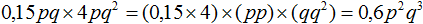
Показать решение
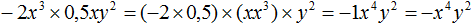
Показать решение
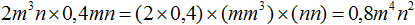
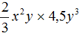
к стандартному виду.Показать решение
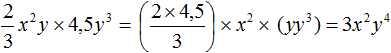
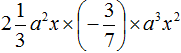
к стандартному виду.Показать решение
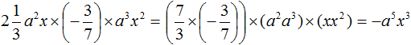
Показать решение
Показать решение
Показать решение
Показать решение
Показать решение
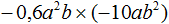
Показать решение
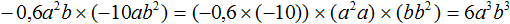
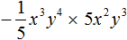
Показать решение
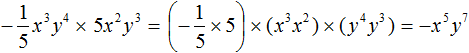
Показать решение
Показать решение
Показать решение
Показать решение
Показать решение
Показать решение
Показать решение
Показать решение
Показать решение
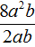
Показать решение
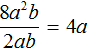
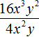
Показать решение
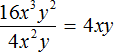
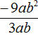
Показать решение
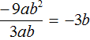
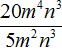
Показать решение
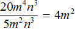
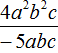
Показать решение
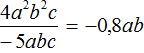
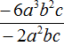
Показать решение
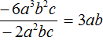